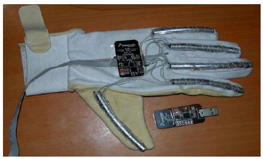
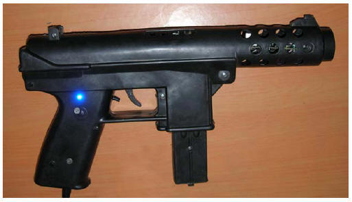

My projects on Virtual Reality:-
This is an extract from a R&D
project that I have done as part of my Mtech
at IIT
Virtual Reality is a creation of a highly interactive computer based multimedia environment in which the user becomes a participant with the computer in a "virtually real" world. This study essentially looks at creating a cheap affordable Virtual Reality haptic device with force feedback or with facility to add force feedback in the future which can be used for interaction with the virtual environment inside the computer. This device can be used to interact with the synthetic imagery generated by an advanced graphics hardware used for military simulations and advanced games. In this project we essentially look at two types of devices, one a VR glove that can be used to interact with virtual objects in the virtual world and the other a Virtual weapon which can be used in Infantry weapon training simulation system which requires the 3D tracking of weapons in real-time. We have tried to use MEMS accelerometers and tuning fork type rate gyros to get orientation and placement information for both the weapon and the glove project. We have also tried to create our own cheap innovative strain gauges using infrared light. Our devices are comparable to their commercial counterparts but cost only a fraction of their cost to build.

VR Hand Device VR Gun Device
Click on button below to visit the virtual reality website
Our Acknowledgements to STM and Freescale semiconductor, who provided us with MEMS accelerometer evaluation boards. The Freescale implementation was wireless and the STM wired, both emulated serial ports via USB and were well implemented. Visit their websites for more info.